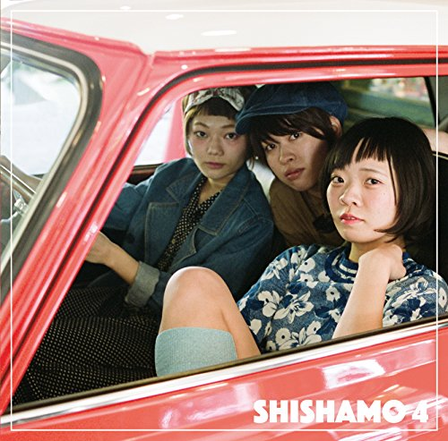

Otoano
プレイ履歴
履歴を消去
総再生数
24
今月 +8
よく聴く曲
明日も
SHISHAMO
合計学習時間
3.2
h
今月
今日
2件

♪
明日も / SHISHAMO
初級〜中級
セグメント 4件
14:32
♪
明日も / SHISHAMO
初級〜中級
セグメント 4件
11:05
昨日
3件
♪
ソラニン / ASIAN KUNG-FU GENERATION
初級
準備中
22:10
♪
明日も / SHISHAMO
初級〜中級
セグメント 4件
20:48
♪
白日 / King Gnu
上級
準備中
18:30
3日前
1件
♪
明日も / SHISHAMO
初級〜中級
セグメント 4件
16:20
Otoano
✕
メイン
ホーム
横断検索
アノテーション投稿
ガイド
サイト利用ガイド
エレキギター初心者ガイド
バンド活動ガイド
辞書
奏法・機材解説
ユーザー情報
アカウント
プレイ履歴
投稿管理